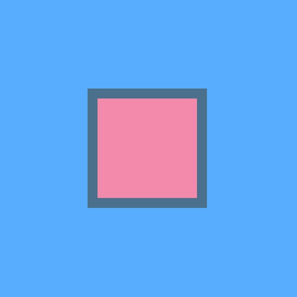

Works

プロジェクト学習
2018.5 - 2018.2
未来大には、3年生が必ず参加する「プロジェクト学習」があります。私はビーコンを活用したアプリを開発するプロジェクトで、サーバサイドを担当しました。
詳しく見る
高度ICT演習
2018.4 -
学年に関わらず、希望者がチームを組んで開発する「高度ICT演習」。私は函館のスイーツの魅力を広めることを目的としたチームで、Androidアプリの開発をしています。
詳しく見る
第17回未来祭
2016.4 - 2016.10
1～2年生の時には未来祭実行委員会に所属していました。2016年度の未来祭（大学祭）では、新設された広報セクションのメンバーとして、告知動画を作成しました。
詳しく見る
第18回未来祭
2016.11 - 2017.10
2017年度の未来祭では、広報セクションのリーダーとして、様々な活動に関わりました。 主に制作したものは、告知動画と公式サイトなどです。
詳しく見る
